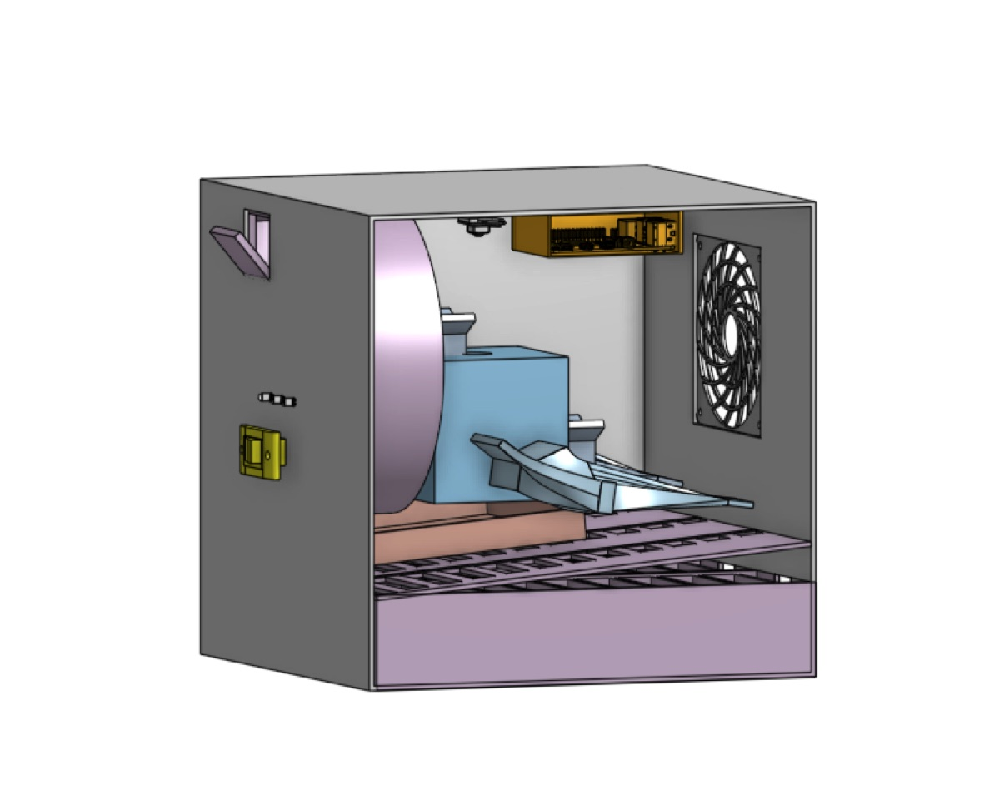
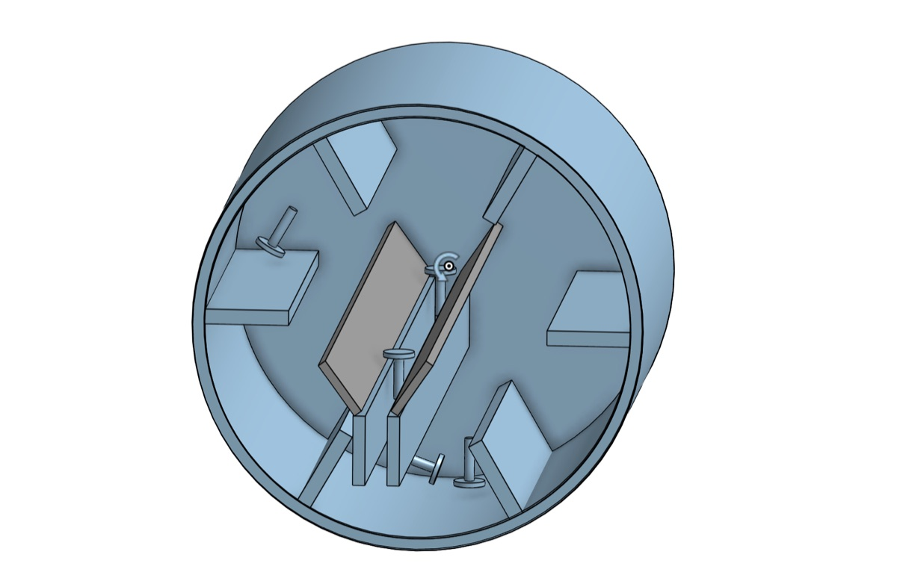
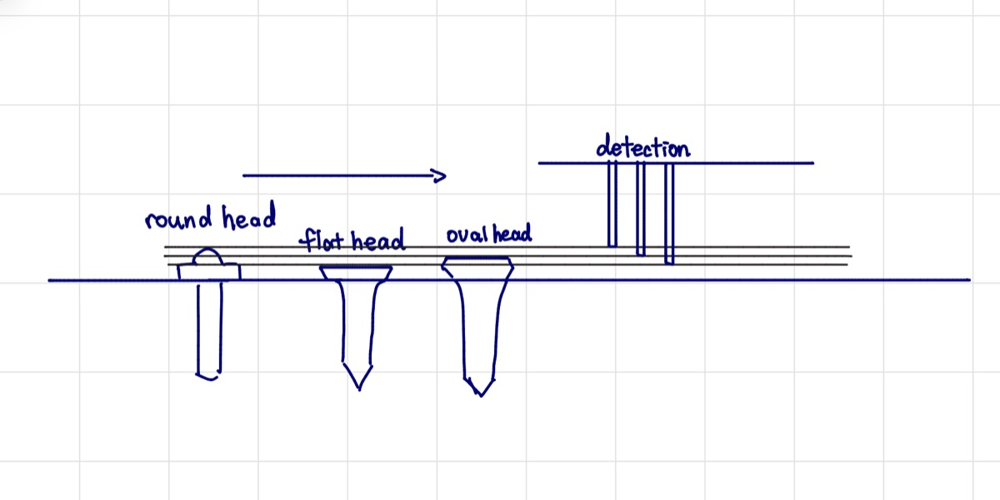
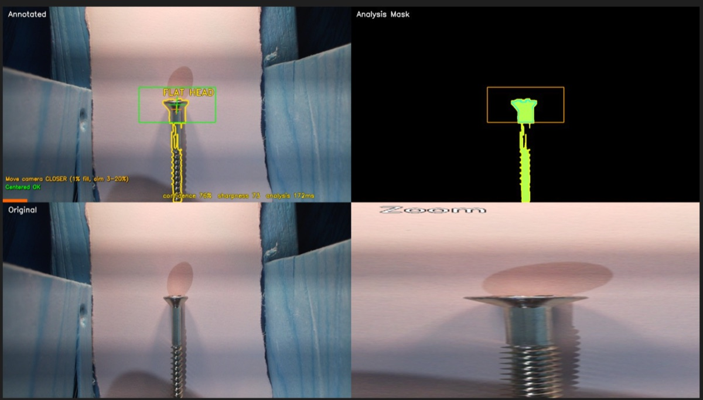
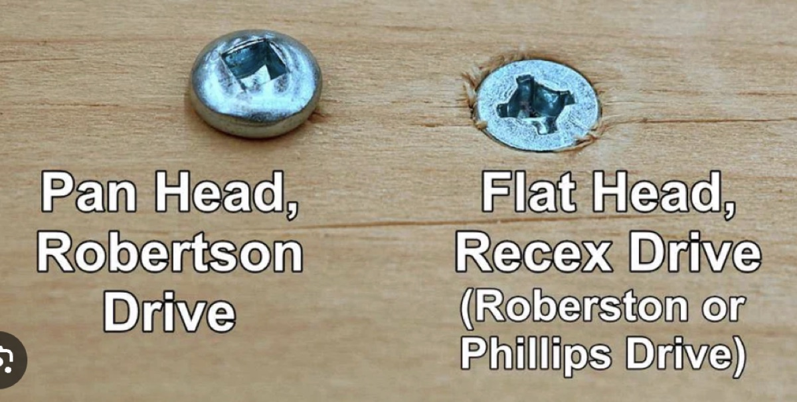
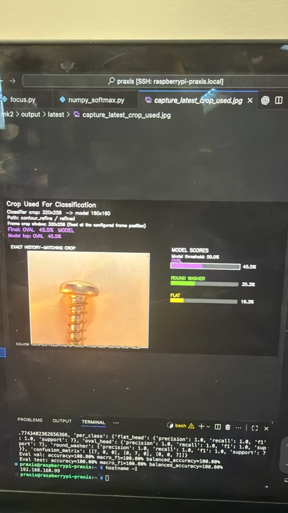
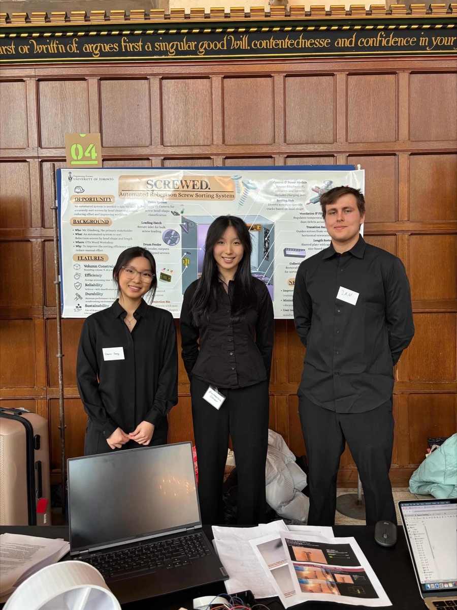
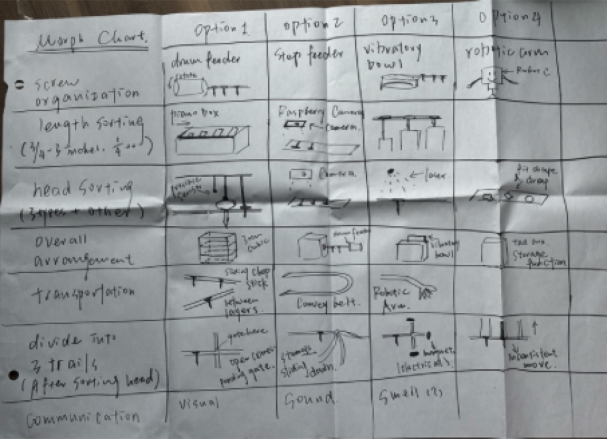
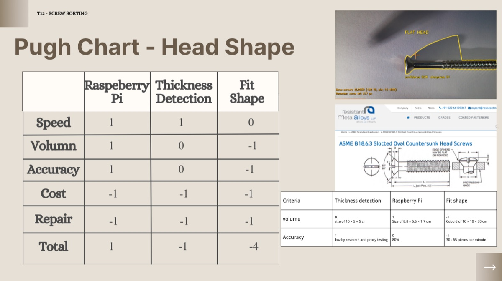

The CAD concept divides the mechanism into three sections. Its reported envelope is 28.5 × 28.5 × 29.2; the source leaves the unit implicit, so compliance with the 30 × 30 × 30 cm requirement is treated as CAD-derived rather than physically verified.
A feed system to introduce screws into the device. The user dumps batches of unorganized
screws and the feeder orients them for the sorting mechanism.
A head-shape sorting mechanism intended to direct screws one by one according to
head shape: flat head, oval head, or round washer.
A length sorting mechanism that receives the corresponding head shape and sorts
these screws by length into different bins.
The team selected a drum feeder through reference comparison. Head-shape sorting used a Raspberry Pi camera and CNN classifier, while the “piano box” length sorter used a slope and graduated openings. Available evidence covers these subsystems separately; it does not establish integrated full-system performance.
Praxis IIMachine learningShowcaseCAD

Subsystem results
Requirements and results remain distinct.
CNN classification≈70% training-session test · ≈80% manual test
The manual test used 34 screws. Both results remained below the ≥97.5% classification requirement.
Piano-box length sorter≈98% at 5° and 10°
Three batches of 20 screws were tested at each angle. The 10° setup was approximately 30% faster than 5°.
System statusCAD concept + subsystem prototypes
No measured integrated-system accuracy or throughput is available in the project sources.
Evidence
Requirement or setup
Reported result
Interpretation
CNN classifier
≥97.5% accuracy target
≈70% at epoch 25; ≈80% on 34-screw manual test
Target not met
Piano box
3 × 20-screw batches at 5°, 10°, 15°, and 20°
≈98%, ≈98%, 85%, and 5%
10° selected; ≈30% faster than 5°
CAD envelope
≤30 × 30 × 30 cm
28.5 × 28.5 × 29.2 (unit implied as cm)
CAD-derived envelope; prototype measurement not established
Context
Need and stakeholders
Need
The need presented in the RFP was to sort a mixed batch of screws for
Mr. Ginsberg's workshop. The screws had to be sorted by head shape and length.
Primary stakeholders
The primary stakeholder is Mr. Ginsberg, the workshop owner who requires the screw sorting system.
Design constraints
The main constraints were:
Reliability: The system must consistently sort screws without failure.
Sorting accuracy: The system must accurately identify and sort screws by head shape and length.
Simple usage: The device had to work without human interaction apart from introducing the screws.
Economic: The device had to be cost-effective to build and operate.
Pictures
Screens & details
Click any tile to open a larger view.






Development
Three main components
Feeder
The final CAD concept specifies a drum feeder to orient screws and deliver them one by one to the next stage. Reference comparison supported this selection; the available sources do not report integrated feeder performance.
Camera sorting
For head-shape sorting, the team used a Raspberry Pi and camera with a CNN classifier. The dataset contained 51 source images per head type—153 originals total—followed by synthetic augmentation. The best training-session test result was approximately 70%, while a separate 34-screw manual test was approximately 80%.
Length sorting
The “piano box” subsystem allowed screws to roll down a slope and fall through openings corresponding to length. Three 20-screw batches were tested at each angle. Accuracy was approximately 98% at 5° and 10°, 85% at 15°, and 5% at 20°; 10° was selected because it was approximately 30% faster than 5°.
Annotated process
Three CTMFs that best explain the screw sorting process
Click any CTMF card to open the full annotated review, figures, and assessment.
Position statement reflection
How this project contributed to my position on engineering design
Exploring all designs
Especially due to the use of the morph chart, the team explored a wide range of
designs and ideas, taking into account various factors and potential solutions. This is
core to my ideal of careful planning and intentional execution.
Compromise in a team
By working in a team of high-achieving people, everyone had different ideas and
considerations on how the design should work, and what approaches to take. This
experience allowed me to grow as an engineer and appreciate the value of diverse perspectives.
CTMF detail
CTMF 07
Morph chart
This CTMF explains the diverging stage of the screw sorting project.
Explanation of the CTMF
A morph chart is used in the diverging stage of a project to explore and generate a wide
range of ideas. It divides the problem space into components and examines candidate approaches
for each one. This makes it easier to explore subsystem alternatives before committing to a
complete architecture.
How it appeared in the project

The morph chart CTMF was one of the most important CTMFs used in this project, because it
allowed us to divide the problem into seven design spaces and explore a broader range of possibilities.
CTMF 08
Pugh Chart
This CTMF explains the converging stage. It is how the team compared alternatives against
clear criteria in order to select the strongest overall concept.
Explanation of the CTMF
A Pugh chart compares candidate designs against a reference concept using explicit criteria.
Each alternative receives a score of 1, 0, or −1 for each criterion, indicating better,
equal, or worse performance relative to the reference. The completed table structures the
team’s judgment; it does not remove uncertainty or bias.
How it appeared in the project

The Pugh chart compared concepts for the three main subsystems: feeding, head-shape
classification, and length sorting. It supported convergence by making the team compare
alternatives against documented requirements and evaluation criteria.
Why it was useful
The Pugh chart helped the team compare alternatives systematically against established criteria
and make the assumptions behind concept selection more explicit.
CTMF 09
Verification testing
This CTMF explains the representing stage of the screw sorting project. It shows how the
team used testing evidence to measure selected subsystems without claiming integrated-system performance.
Explanation of the CTMF
Verification testing follows concept selection, although iteration can continue. A prototype
can then be tested against defined requirements. Complex devices are often divided into
subsystems that can be tested individually, while integrated performance still requires a
separate full-system test.
How it appeared in the project
The team designed a classification subsystem prototype and coded Python scripts to run a machine-learning model
for classifying screw heads. This involved collecting data, training the model, and testing it
against the requirements. The training-session test reported approximately 70% at epoch 25 after
augmentation. A separate manual test on 34 screws achieved approximately 80% accuracy. Both results
remained below the ≥97.5% requirement, so the tests exposed a shortfall rather than validating a robust system.
Why it was useful
This CTMF grounded design decisions in empirical data and showed where subsystem performance did not yet meet the requirements. The available evidence does not establish stakeholder validation or integrated-system performance.